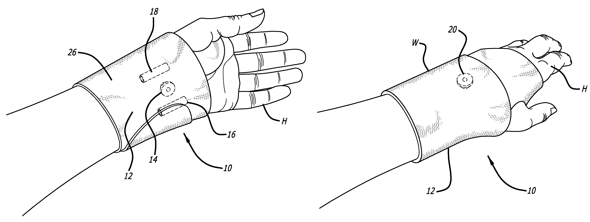

Academic Research
One of the professionals I was able to come in to contact with was Dr. Rossanna Buigas M.D. (at rbuigas@hotmail.com) who runs a private business dealing with a wide variety of medical issues including joint pains. The doctor oversees many patients that suffer from injuries and ailments pertaning to the wrists such as arthritis. This would be the main reason I wished to contact this specific professional as they have vast experience with the wrist and its associated joints which should offer a very helpful push to the design of our groups project. When I had asked what the main cause of wrist pain/discomfort was the doctor had stated it was mostly caused by the pressure that is applied on said wrist joint(s). When asked the best way to prevent such pains the doctor had said it would be best to somehow monitor the amount of pressure placed on the wrist and its joints. With this insight our group will most likely wish to pursue some sort of device that would allow the user to track the amount of pressure they place their wrist under to circumvent any wrist problems. The other staff of the building seemed to share a consensus with the doctor and even offered additional advice saying that the overuse of the joints in the wrist would cause them discomfort or pain. With this additional information we could also attempt to implement a timer on our device that displays how long you have been writing for and would suggest breaks for the user so they dont overuse their respective joints.
Some of the other professionals I attempted to contact were Dr. Adrian Vazquez (at avazquez41@gmail.com) and his team who I attempted to contact through our school's Alumni Program BConnected. One of the main reasons I wished to seek their expertise is the fact that they specialize with rheumatology which is a profession that mainly deals with joint pain. Through this I had hoped to gain extra information on external factors that can lead to wrist discomfort or pain other than pressure on the joints. As of recent I have gotten no response back from the proffesionals I had contacted and if at some point I do receive a reply I will update this section. However, through my reasearch so far the leading cause of wrist injuries seems to be the overuse of the joints as well as the amount of pressure places on them.
Market Research
Citation BMJ Journals: van Vugt RM, Bijlsma JWJ, van Vugt ACChronic wrist pain: diagnosis and management. Development and use of a new algorithm Annals of the Rheumatic Diseases 1999;58:665-674.
In a study conducted by BMJ Journals which was administered to some of the general public in order to see the cause of chronic and regular wrist pain. Those who were part of the study went through multiple examnitians such as ultrasound graphs in order to view the health and how the joints in the wrist were used as more tests went on. In around half of the participants they found that the main cause of wrist pain was intra-articular meaning inside of the joint. Most participants had this pain when doing demanding tasks such as tennis, typing, or writing for a significant amount of time which all demand a high use of the wrist and its associated joints. The participants had agreed that this was a problem that needed to be adressed which is prevalent in day to day life. This research component helps narrow down what exactly we want to focus n in our project. This allows us to narrow down which component of the wrist we want to focus on and will hopefully guide our future designs and discussions. This helps to match up the previous professionals statements on how wrist pain is caused and both seem to point at a similar solution of tracking pressure placed on the joints of the wrist which seem to be the major cause of the pain and discomfort experienced when doing activities such as writing.
Citation ScienceDirect:
In an article published by ScienceDirect wrist pain was defined by two major disorders mainly known as tenosynvitos and tendinitis. Both of these disorders are found in the tendons of the wrist as previously stressed befoehand. However, this study provides a much larger control group of people and finds thta more than ~10% of Americans, Britians, and others suffer from these conditions. These are not only contained in the wrist but can even affect the forearm and hand with similar pain caused by similar conditions. This article offers similar solutions as our group proposed such as extended periods of rest and to monitor the intensity of the task said person is doing. This article helps put into perspectivev how much people around the world suffer from the same problem and allows us to keep workshopping a solution that allows us to address the main cause of these disorders and pains.
Citation SpringerLink: Watanabe, A., Souza, F., Vezeridis, P.S. et al. Ulnar-sided wrist pain. II. Clinical imaging and treatment. Skeletal Radiol 39, 837–857 (2010). https://doi.org/10.1007/s00256-009-0842-3
This article provides a very deep medical dive into the causes of wrist pain in a somewhat different target audience then we had intended but offers a very complex and sound explanation and cause of a lot of wrist injuries or pain. This is all found in the ulnar-side of the wrist or to put into simple terms the side of the wirst that is opposite of your thumb. In this study we are able to see x-ray and ultrasound photos of the wrist which offer high value information on how our design can function to help aid the sides of the wrist which cause the most problems and pain. With this extar information on how the wrist functions and one of the main areas of concern for the wrist we may be able to further discuss our design and true aim for this project. In this article we see multiple different explanations for the cause of this wrist pain such as extreme sports like gymnastics which recruit a lot of use from the wrist. While this article may not appeal to the target audience we want to adress it allows us to gather more information on our project and will help us to narrow down a solution with our group. Below you will find an image from the article which shows the main components of the wrist that are affected by carpal tunnel and wrist pain.

Patent Research
This patent offers a simple yet effective way to combat wrist pain through a sleeve like design that is comparable to a cast. The issues that would arise through this design is that it seems to be quite uncomftorable for the user to weear for an extended amount of time and it seems hard ot take on and off. Other than those issues this patent seems to be similar to the main goal of our project which to try and comabt wrist pain in most of its forms. We can most definelty improve on the design and wearability factor of this patent and attempt to improve on areas it failed. We also want to create a design that looks more sleek as well as this patent seems to be similar to a cast as mentioned beforehand. We hope to resolve these issues and create a sleek, comftorable, and functional design that will appeal to those who need this technology.
